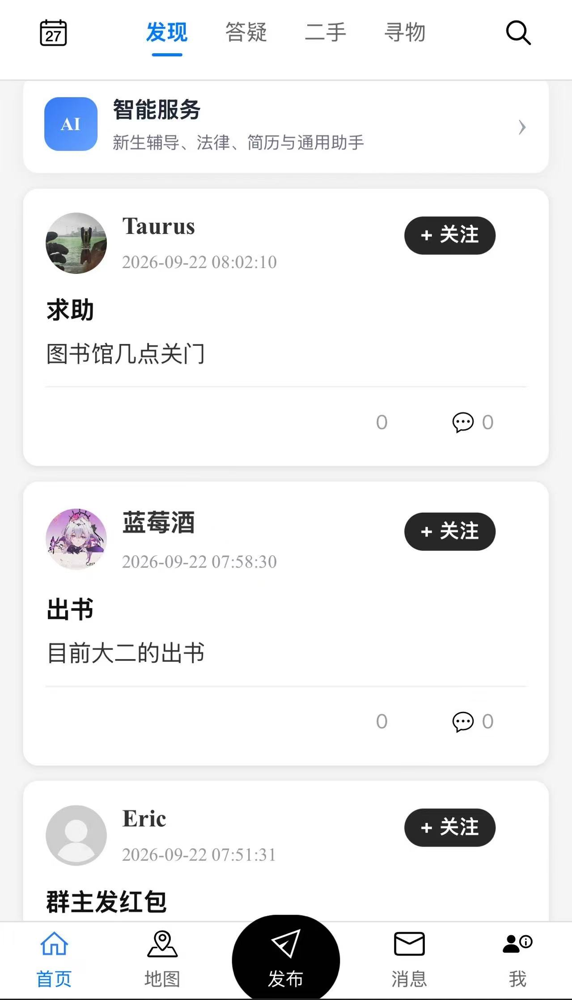
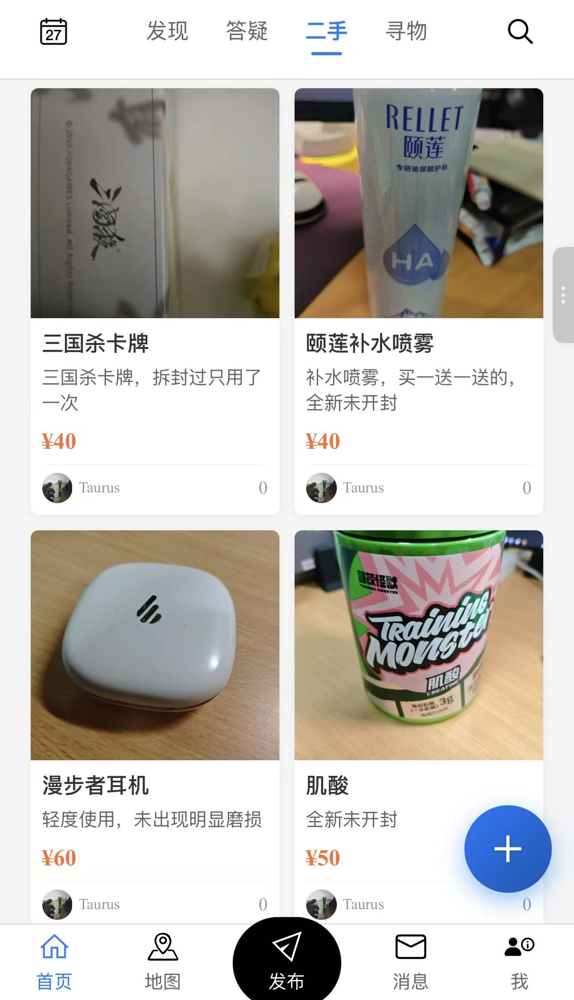
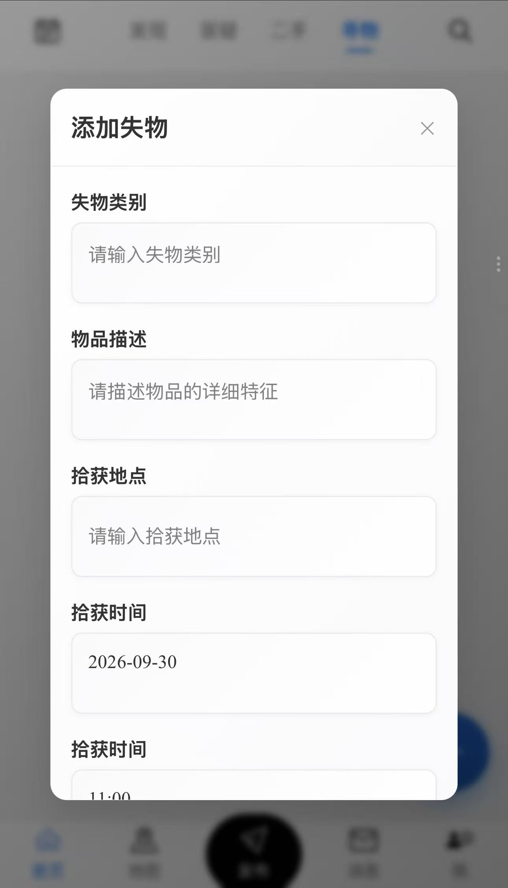
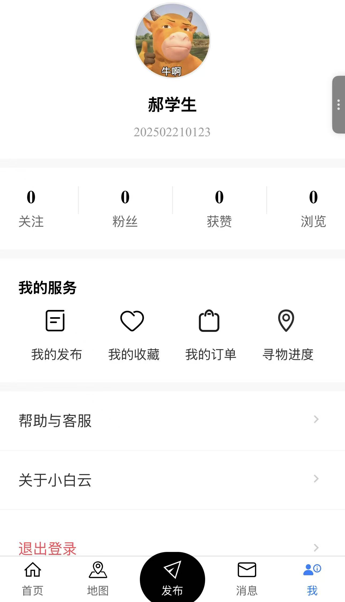

小白云
Software · 校园服务平台uni-app 跨端 · 2026已部署上线
面向校园场景的 移动服务平台：统一入口承载校园社区、二手交易与寻物场景，并通过安全网关接入四类智能助手（新生辅导、法律、简历、通用），一个账号连接校园生活与智能服务，会话历史跨助手共享。采用 uni-app 跨端方案 开发，一套代码覆盖 H5、小程序与 App 多端，H5 版本已部署到自有服务器并对外提供访问与下载入口。
打开小白云下载页 ↗
01
产品概览
Product Overview

App · 发现页 · 智能服务与校园动态

二手市场 · 商品列表

寻物 · 添加失物登记

我的 · 个人中心
02
要解决的问题
Problem & Insight
校园服务最分散的两类需求恰好也最高频：二手物品交易散落在各个群聊和朋友圈，信息一沉底就找不到；失物招领靠捡到的人"凭缘分"发群，丢了东西的人根本不知道去哪问。入口分散 = 使用率低，这是校园服务类应用最难跨过去的一道坎。
小白云的解法是给这两类交易一个固定场所：二手 板块让物品流转有统一的列表、价格与联系方式；寻物 板块用结构化的失物登记（类别、描述、拾获地点、时间）替代群里的一句"谁捡到了我的卡"，并可用寻物进度跟踪进展——信息不再沉底，服务方也有了稳定的触达通道。在此基础上，平台再通过安全网关统一接入四类智能助手，把"查指南、问问题、改简历"这些原本要开口求人的事也搬进应用。
03
核心能力
Key Features
智能服务中枢发现页一级入口，四个校园助手共享安全登录与会话历史，进入即用
新生辅导助手面向新生的校园、校园生活与办事指南问答，入学季高频问题一站式解答
法律助手上传一份材料即可获取风险提示，把法律咨询的门槛降到"传个文件"
简历助手完善资料、优化表达与扩写经历，辅助求职材料快速成型
通用助手日常学习与校园问题交流的兜底助手，覆盖长尾需求
统一会话会话历史跨助手共享，切换助手不丢上下文，账号体系统一管理
校园社区帖子、话题、评论与收藏，发现与交流板块承载校园讨论
二手市场商品列表分区展示，卡片含图片、描述、价格与发布者，支持一键发布
失物招领与寻物结构化失物登记（类别、描述、拾获地点、时间），发布、搜索与状态追踪闭环
跨端一致体验uni-app 一套代码输出 H5、小程序与 App，多端界面与交互保持一致
H5 免装可用H5 版本部署在自有服务器，扫码或点开链接即可使用，降低首次使用门槛
安装包分发提供独立的下载落地页，统一 App 安装包的获取入口与版本说明
04
技术与部署
Stack & Deployment
开发框架uni-app + Vue一套代码编译到 H5 / 小程序 / App 多端，降低多端维护成本
智能助手四类助手 + 安全网关新生辅导 / 法律 / 简历 / 通用四类助手经安全网关统一接入，共享登录与会话历史
前端形态H5 应用 + 原生安装包H5 用于快速触达，App 用于完整体验，双通道覆盖不同场景
部署方式自有服务器静态托管应用资源与服务部署在独立服务器，路径 /xby/ 下对外提供服务
分发入口下载落地页统一的安装包获取页面，便于分享与版本更新
05
落地成果
Results
3端覆盖：H5 / 小程序 / App
1套代码多端复用，维护成本大幅降低
已上线服务端部署完成，持续对外提供服务
应用打包上线完成 App 打包与 H5 构建，部署到自有服务器并对外开放访问
统一分发通道建立下载落地页，安装包的获取与更新有了固定入口
跨端方案验证uni-app 跨端链路跑通，后续新端接入只需增量编译
可持续迭代服务端自持，具备后续功能扩展与数据沉淀的基础